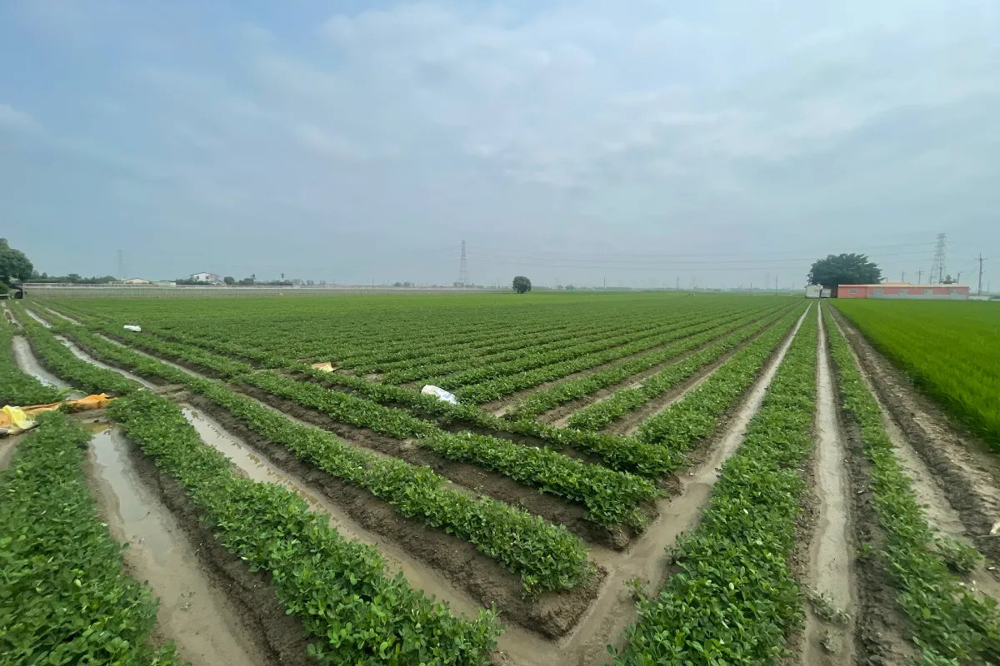

原味花生糖
選用飽滿花生，搭配簡單糖香，做成一口接一口的原味花生糖。適合分享，也適合留給日常裡想吃點香脆的時刻。
將前往 7-ELEVEN 賣貨便，付款與配送由賣貨便系統處理。
品牌堅持
「花生一生」來自雲林元長。我們參與種植、採收、挑選與烘焙，不把產地只當一句故事，而是把每一步落實在產品裡。

花生日誌
整理花生保存、烘焙、風味與品牌紀錄，慢慢累積一顆花生值得被理解的地方。
文章載入中...
立即選購
先在官網認識商品，再由 7-ELEVEN 賣貨便完成下單、付款與取貨。
最新消息
最新出貨、優惠與品牌活動，都會優先放在首頁公告。
日常裡的花生香
想詢問現貨、產品規格或送禮需求，歡迎直接加入 LINE，我們會親自回覆。